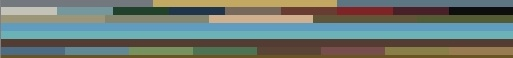
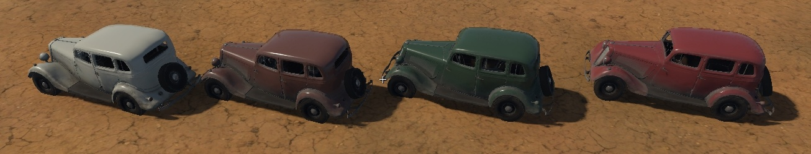
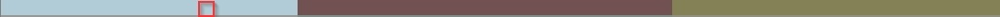
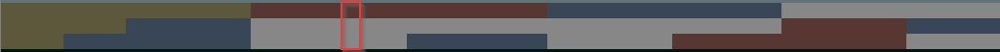

Procedural Rendinst Painting
Overview
This article provides a general overview of procedural painting, its principles, and various types. Detailed shader configuration is covered individually for each shader.
We use different types of procedural painting across various projects, mainly due to the migration of technologies between projects and the development of new methods.
In War Thunder-based projects, we have:
Painting the second detail of the
rendinst_layeredshader via the editor (now deprecated).
In daNetGame-based projects, we have:
Procedural Texture Painting: All Projects
Workflow
This is the most common painting method. We use a special texture (or multiple textures), where each pixel row vertically corresponds to a paint line that will color an object. You can fill an entire row with a single color (for uniformly painting an object) or use multiple colors, which will change the object’s color based on its position on the map.
General steps for using a paint map:
Obtain a paint texture, for example, an image.
Select an existing row with appropriate colors or create a new row with the required colors. Rows are indexed from zero, meaning the first row is
0, not1.Specify the selected row number in the shader.
Optionally, define the painting strength (if the shader supports it).
{kind=link}
The result is an asset painted in the desired color. If the row contains multiple colors, the object will display different colors depending on its position on the map.
{kind=link}
Important
When creating a new paint line, ensure it is not already in use! Update the texture and use the nearest available row, or if possible, reserve unused rows by filling them with a noticeable bright color and labeling the asset for which they are reserved.
Failure to do so may result in a paint conflict (someone else might use your row before you do, leading to your assets appearing in unwanted colors, forcing you to reconfigure multiple shaders), along with other complications.
Technical Details
The global paint palette across all projects is uniformly named
assets_color_global_tex_palette.tif. Naming conventions for other palettes follow the pattern:map_name_color_tex_palette.tif. For example: for the War Thunder mapair_stalingrad, the texture would be namedair_stalingrad_color_tex_palette.tif.Unfortunately, the current naming of painting textures does not fully comply with this convention, and they are named inconsistently. Please adhere to these naming rules when creating new paint textures.
The paint line is selected in the shader by specifying the row. The column within that row is determined by the object’s position on the map. Essentially, a random pixel in the row is chosen as the object moves across the landscape.
Consequently, the more frequently the colors change within the row, the more frequently the object’s color will change as it moves on the map.
There may be instances where you need to define a strict combination of procedural colors on an asset. For example, construction cranes might require different parts to be painted in specific color combinations, or vehicles might need predetermined color schemes for the roof and body.
This is achieved by following the same logic as in point 1: the colors across all paint lines are selected from a single column of pixels, based on the object’s position on the map.
Therefore, you should define multiple rows for the asset, one for each part that will be painted separately. Group the color combinations as needed. As a result, you’ll always get the correct color combinations on the selected asset.
{kind=link}
{kind=link}
{kind=link}
War Thunder Specifics
Painting Behavior
Painting is applied based on a paint mask, which is the alpha channel of the diffuse map. White areas will be painted, while black areas will not.
The color is applied as a modulation (a multiply operation, doubled).
Paint Textures
There are several paint textures in use:
The global paint texture,
assets_color_global_tex_palette.tif, is used to paint anything that can be reused across multiple maps. Typically, this includes everything except buildings, which may need to be repainted differently for each map.Local paint textures are created for specific maps as needed. For example, a test texture was created for the
air_stalingradmap, namedair_stalingrad_color_tex_palette.tif. These are used to repaint specific objects on specific maps.
All textures are stored in this location:
<project_name>/develop/assets/textures/colorize_textures/, in 24-bit TIF format (without alpha).You can assign a specific texture to an asset for painting by using the parameter
script:t="palette_index=".Value
0means the asset will always be painted using the global palette.Value
1(default) means the asset will be painted using the local palette.
Important
In War Thunder, local palettes (map-specific) are optional and may not be specified. If an asset does not have a specified palette index, it will be painted using the palette for the map it is located on. If no specific palette is assigned to the map, all assets will be painted using the global palette.
In contrast, in daNetGame-based projects, if no palette is specified for an asset, it will not be painted at all, and a palette must always be explicitly assigned.
Since this technology was introduced to War Thunder relatively late, thousands of objects were left without a defined paint palette (i.e., they lack the
script:t="palette_index="parameter). As a result, when we want to repaint a specific asset on a specific map, we duplicate the global palette and modify (or add) paint lines for the specific asset, leaving everything else unchanged.For example,
assets_color_global_tex_palette.tifandavg_iberian_castle_color_tex_palette.tifdiffer only in row 168 (disregarding new rows added to the global palette after the fact).The width of the paint texture is 64 pixels. The height is a power of two, such as 2, 4, 8, 16, 32, 64, and so on. Only the RGB channels are used.
Adding Local Paint Textures to Maps
Local paint textures are assigned to levels via the level.blk file, for
example: <project_name>/develop/gameBase/levels/stalingrad.blk. The syntax is
as follows:
shader_vars{
paint_details_tex:t="air_stalingrad_color_tex_palette"
}
Painting Assets in Composites
It is not possible to apply uniform painting to identical objects within a composite (e.g., windows in a building). If multiple colors are present in a paint row, they will be applied randomly.
This makes it challenging to paint large composite objects (such as skyscrapers composed of multiple vertical segments), especially if the segments are shifted in the composite to create buildings of varying heights. Each segment may end up with inconsistent colors.
daNetGame-Based Projects Specifics
Painting Behavior
In daNetGame-based projects, painting is applied directly to the diffuse texture without using any masks. Instead, daNetGame-based project’s shaders use black and white paint point parameters. This approach avoids overloading the shaders with mask-based painting, as is done in War Thunder.
The black point defines the brightness of the albedo texture at which no painting will be applied.
The white point defines the brightness at which the albedo texture will be fully painted.
This allows you to specify a brightness range that will be painted, while excluding other areas (such as dark streaks in wood). If you need to exclude brighter areas from being painted, you can invert the paint point values (i.e., set the black point higher than the white point).
Important
A common mistake when using paint points is setting the same values for both the black and white points.
Examples:
script:t="paint_points_black=1,0.75,0.2,0" script:t="paint_points_white=1,0.75,0.2,0"
paint_white_point=0.2 paint_black_point=0.2
script:t="paint_points=0.5,0.5,1,1"
These configurations will result in a division by zero error, which generates the following message:
rendinst_perlin_layered: divide by zero[real] while exec shader code. stopped at operand #45
Therefore, never set the same values for both paint points.
From this, two potentially error-prone situations arise:
Only one detail is being painted, and it requires paint points. What about the other details and points?
Solution: For the second (or third) detail, set any range of paint points. You can use the default 0,1, as this detail is not being painted. The key is to avoid using identical values for the points.
Example:
script:t="paint_details=0,1,0,0" script:t="paint_points=0,1,0.12,0.23"
Two or three details are being painted, but only one or two need paint points (i.e., more details are being painted than require paint points).
Solution: For the painted details that do not need paint points, assign the maximum range: 0,0.00001.
Example:
script:t="paint_details=1,1,0,0" script:t="paint_points=0,0.00001,0.12,0.23"
In most cases, the color is applied using a simple multiplication.
An exception is
rendinst_simple_painted, which has a parameterpaint_mult=1, where1is a regular multiplier, and2is a 2x multiplier.
{kind=link}
{kind=link}
{kind=link}
Paint Textures
There are several paint textures:
The global paint texture,
assets_color_global_tex_palette.tif, is used to paint anything that can be reused across multiple maps. It is located at:<project_name>/develop/assets/manmade_common/textures/palettes/assets_color_global_tex_palette.tif.Local paint textures are created for specific maps to repaint particular objects (most commonly, building parts). The following rules were established:
Row 0 is reserved for painting building walls.
Row 1 is for doors and windows.
Beyond that, you can assign colors freely.
Local paint textures should be placed in the appropriate map directories. For example:
<project_name>/develop/assets/battle_of_moscow/textures/palettes/volokolamsk_building_colors_tex_palette.tif.Note
Unfortunately, not all textures are currently stored in these paths, and some are located in other directories, which is somewhat illogical.
Please ensure that textures are placed in the correct locations when creating new ones.
You can assign a paint texture to an asset using the parameter
script:t="palette_index=".Value
0means the asset will always be painted using the global palette.Value
1(default) means the asset will be painted using the local palette.
In most cases, the value should be set to
0. Only building walls and their windows and doors typically remain set to1(or have no value specified).The width of the paint texture is 256 pixels. The height is a power of two, such as 2, 4, 8, 16, 32, 64, etc. Only the RGB channels are used.
Connecting Local Paint Textures to Maps
Local paint textures are integrated into scene
.blkfiles. For example, for daNetGame-based projects, the scene files are located in:<project_name>/prog/gameBase/content/<project_name>/gamedata/scenes/The syntax is as follows (the
*after the texture name is mandatory):entity{ _template:t="shaderVars" "shader_vars__vars:object"{ paint_details_tex:t="sovmod_building_colors_tex_palette*" } }
Painting Assets in Composite Objects
Unlike in War Thunder, in daNetGame-based, all identical objects within composite objects are automatically painted with the same color, even if multiple colors are available in the paint row. For example, the windows and doors of a building won’t be randomly colored red, blue, or green. They will all be painted the same color throughout the building.
However, this can sometimes be inconvenient, such as in shops, where all
identical assets like books, toys, or buckets would have the same color. To
introduce more variety, you can use the parameter ignoreParentInstSeed:b=yes.
This is applied to the final node of the composite object, allowing that
particular node to be painted with a unique color.
Example:
node{
type:t="rendInst"
name:t="tunis_city_house_window_1200x1900_a_cmp"
tm:m=[[-1, 0, -1.50996e-07] [0, 1, 0] [1.50996e-07, 0, -1] [-1.07798, 7.54841, 4.72492]]
ignoreParentInstSeed:b=yes
}
Important
The parameter must be applied to the final node: the specific object that you
want to paint separately from other objects in the composite. For instance, if
you apply this to the composite object house_a_plates, the entire composite
will be painted separately from other composite objects of House A, but the
plates will all still have the same color.
Therefore, if you need the individual plates themselves to be painted different
colors, you must set the parameter on each individual plate within the composite
house_a_plates.
Painting Assets on Water or Floating on Waves
For assets that are located on water, such as the yacht_azimut62E on
avn_san_francisco, you must specify the parameter script:t="use_painting=2",
or you will encounter issues as shown in this video:
Procedural Painting of Second Detail in daEditor: War Thunder
This is an outdated War Thunder technology, but it still exists. It is only used
on rendinst_layered, and is described in
this article.
Procedural Painting with Parameter: daNetGame-based Projects
In some shaders (e.g.,
rendinst_simple_painted,
rendinst_perlin_layered), there is
a parameter script:t="paint_const_color=0,0,0,0" (or detail_const_color, if
multiple details are involved in blending).
The first three components represent the RGB color (convert values from
0-255to0-1).The fourth component controls the intensity of the color’s effect on the model’s albedo. A value of
0means no effect, and1means full influence, with a gradient in between.However, this does not work perfectly; a value of
0still leaves some influence from the paint, albeit faintly. There is little point in leaving this parameter unused.
The parameter works both on its own and in combination with texture painting (the fourth component will define the strength of the texture painting influence).
Shader Parameter List
War Thunder
script:t="palette_index=0": global parameter that defines the global painting texture.0: global texture;1: (default), local texture of the specific map.
For shaders with diffuse/normal maps:
script:t="use_painting=1": controls painting from the palette specified in the scene shader variables.1: enables painting,0: disables it.Values between
0.01and0.9control the painting strength (as a multiplier). Painting is applied according to the alpha of the diffuse map, multiplied by theuse_paintingvalue.Values between
1.01and1.9also influence the painting strength, ranging from0.0to1.0, but they disable the random pixel selection from the paint line based on object height shifts (useful for painting modular skyscrapers in a consistent color).The palette itself is named
paint_colors.ddsand is located here:<project_name>/develop/assets/textures/colorize_textures.
script:t="painting_line=43": specifies the paint line number (indexing starts at0).
For rendinst_layered/dynamic_layered
and their derivatives:
script:t="use_painting=1"script:t="painting_line=43"script:t="paint1stdetail=1": an additional parameter indicating which detail to paint.1: for the first detail,0(or-1): for the second.
For
rendinst_perlin_layered/dynamic_perlin_layered:
script:t="paint_details=0,1,0,0":The first 2-3 components (depending on the number of details) select which details are painted. Values range from
0to1. Experimenting with negative or values above1is possible, but requires caution.The 4th component specifies the paint line (index starts at
0).
daNetGame-based Projects
script:t="palette_index=0": a global parameter that defines the global painting texture.0: global texture;1: default, local texture of the specific map.
paint_palette_row=1: where1is the paint line number from the texture. By default, the shader uses line 1 (in this case, the parameter can be omitted).paint_white_point=0.2: the diffuse brightness at which the albedo will be fully painted.paint_black_point=0.05: the diffuse brightness at which the albedo will not be painted.paint_mult=1(or2): where1applies no multiplier, and2applies a 2x multiplier.
For rendinst_layered/dynamic_layered
and their derivatives:
script:t="use_painting=1"script:t="painting_line=43"script:t="paint1stdetail=1"
For shaders with detail mixing, excluding
rendinst_layered:
script:t="paint_details=0,1,0,0":The first 2-3 components (depending on the number of details) select which details are painted. Values range from
0to1. Experimenting with negative or values above1is possible, but should be done carefully.The 4th component specifies the paint line (index starts at
0).
script:t="paint_points=0,0,0,0": parameter for setting paint points for two details, analogous to the black/white point behavior inrendinst_simple_painted. The first two components define the paint points for the first detail, and the last two components for the second.
Alternatively:
script:t="paint_points_black=0,0,0,0": sets the black point for three details. The first three components set the black point for each detail, and the 4th component must be present but is unused.script:t="paint_points_white=1,1,1,0"” –” sets the white point for three details. The first three components set the white point for each detail, and the 4th component must be present but is unused.